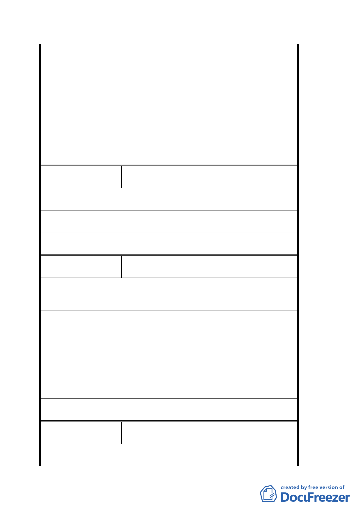

突，達到捷運商圈共榮共享之目的。
1. 配合捷運內湖站 B6 出口之設置，將本里成功路四
段 167 巷距成功路間約 30 公尺之巷道範圍，比照
慶城街做法，規劃為「捷運出口人行徒步區」。
建 議 辦 法 2. 建請於捷運興建規劃該區土地使用分區時，將鄰近
住戶成功路四段 137 號延伸右轉至金湖路 7 號，以
及成功路四段 167 巷 6 弄北側各戶之土地使用分區
變更為商業用地。
1. 建議內容非屬都市計劃範疇，留供將來捷運站規劃
委 員會決 議 時參考。
2. 現已屬商三（特）。
編
號４
陳情人
郭信論 先生（台北市內湖區成功路
四段 294 巷 25 弄 13 號）
陳情理由
因 169-175 號地主意見分歧，改建無期；又聯開獎勵
條件不佳，使地主權益受損甚大。
建議辦法
不願參與聯合開發；否則請將該地以現值加成立即徵
收，且補償費用亦須一併辦理。
委員會決議
有關劃定都市更新部份請捷運局再與土地所有權人協
調及研究可行方案
編
號５
陳情人
郭添仁 先生（台北市內湖區成功路
四段 173 號四樓）
陳情位置：內湖區康寧段三小段 188-193 地號
陳 情 理 由 該地屬空地，處理上可避免毀屋、過程容易且更接近
路口，方便出入。
1. 該地因整合不易，地主自知空地已多年閒置，不能
蓋屋，如條件優厚買入，地主較易配合。
2. 利用既有巷道，配合將來跨越捷運方式，建造一座
建議辦法
陸橋，同樣從原來的出入口即可，如此可省去拆屋
惹民怨，又較節省經費、節省溝通程序、縮短工時，
應是最有效方法。
3. 或橫越馬路直接設人行徒步區，而將麥當勞前的行
人穿越道與此徒步區合併即可。
委員會決議
有關劃定都市更新部份請捷運局再與土地所有權人協
調及研究可行方案
編
號６
陳情人
永泰大廈管委會 （台北市內湖區成
功路四段 137-155 號）
陳情理由
1.
捷運內湖 B6 車站被西移 28.8 公尺，影響本社區住
戶權益。
第 5 頁，共 9 頁